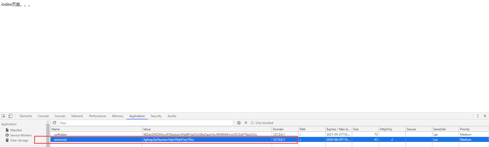

Django User Authentication (Auth) Component
The Django user authentication (Auth) component is generally used for user login and registration, to determine whether the current user is valid and redirect to a login success or failure page.
Django user authentication (Auth) component requires importing the auth module:
# 认证模块 from django.contrib import auth # 对应数据库 from django.contrib.auth.models import User
The return value is a user object.
Three methods for creating a user object:
- create(): Create a regular user, with the password in plaintext.
- create_user(): Create a regular user, with the password in ciphertext.
- create_superuser(): Create a superuser, with the password in ciphertext, and an additional email parameter must be passed.
Parameters:
- username: username.
- password: password.
- email: Email (The create_superuser method requires an additional email parameter).
from django.contrib.auth.models import User User.objects.create(username='runboo',password='123')

from django.contrib.auth.models import User User.objects.create_user(username='runbooo',password='123')

from django.contrib.auth.models import User User.objects.create_superuser(username='runboooo',password='123',email='runboo@163.com')

Use the authenticate() method to verify the user's username and password, filtering the user object from the auth_user table.
Before use, you need to import:
from django.contrib import auth
Parameters:
- username: username
- password: password
Return value:If verification succeeds, it returns the user object; otherwise, it returns None.
Example
if request.method == "GET":
return render(request, "login.html")
username = request.POST.get("username")
password = request.POST.get("pwd")
valid_num = request.POST.get("valid_num")
keep_str = request.session.get("keep_str")
if keep_str.upper() == valid_num.upper():
user_obj = auth.authenticate(username=username, password=password)
print(user_obj.username)

Add a session for the successfully verified user, and assign request.user to the user object.
Use the login() method to log in.Before use, you need to import:
from django.contrib import auth
Parameters:
- request: user object
Return value: None
Example
if request.method == "GET":
return render(request, "login.html")
username = request.POST.get("username")
password = request.POST.get("pwd")
valid_num = request.POST.get("valid_num")
keep_str = request.session.get("keep_str")
if keep_str.upper() == valid_num.upper():
user_obj = auth.authenticate(username=username, password=password)
print(user_obj.username)
if not user_obj:
return redirect("/login/")
else:
auth.login(request, user_obj)
path = request.GET.get("next") or "/index/"
print(path)
return redirect(path)
else:
return redirect("/login/")

To log out a user, use the logout() method, which needs to clear session information, and set request.user to an anonymous user.
Before use, you need to import:
from django.contrib import auth
Parameters:
- request: user object
Return value: None
Example
ppp = auth.logout(request)
print(ppp) # None
return redirect("/login/")
Set up a decorator and apply it uniformly to pages that require successful login before they can be accessed.
Before use, you need to import:
from django.contrib.auth.decorators import login_required
Example
def index(request):
return HttpResponse("index page...")
Set which page the user accessed from, so that after successful login, the user returns to that page.
Analysis:
When a user visits a page, if the user is not logged in, Django returns the login page to the user.
At this point, the login page URL has a parameter after it: next=the URL of the page the user visited.
Therefore, set the URL to redirect to after successful login as the value of the next parameter.
However, if the user enters the login page (logi) directly from the start, request.GET.get("next") will not get a value, so add "or" afterward to set a custom return page.
Example
path = request.GET.get("next") or "/index/"
return redirect(path)